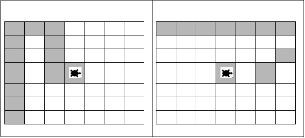

Topics: Newick tree format: parsing and (simple) visualization of trees; Looping through strings; using decisions.
Today's lab works through two examples of "looping through strings." For the first example, we will use the following abbreviations to give directions to our turtles:

What set of directions created the path on the right?
Let's create a program to test this by drawing out paths, given a set of directions. A possible outline for the program is:
For each character in the directions:
To turn this into Python code, we need to give names to variables we are using.
Lets call the string of directions, directions and use c as
our loop index:
directions = "RRFRFFFLFFLFFFFFF" for c in directions:
The rest of the loop can be done using decisions (remember to use "==" for comparison):
if c == 'F':
tess.forward(30)
if c == 'L':
tess.left(90)
...
Since we only go to the second if-statement if the test on the first one fails (i.e. only check if the character is 'L' if we already checked and it wasn't 'F'), we can also write this as:
if c == 'F':
tess.forward(30)
elif c == 'L':
tess.left(90)
...
The looping and decisions are the hardest part of the program, but we need a few more pieces to make it run:
Test your program on several sets of directions to make sure it works.
A compact way to represent trees is via the Newick format. This format groups siblings, then cousins, etc. For the dinosaurs, we would group (Ornithomimids, Maniraptors). The next most closely related species are the Carnosaurs. This can be represented as: (Carnosaurs, (Ornithomimids, Maniraptors)). The whole tree of the 9 species is (using only the first 3 letters of each name to save space): ((Sau, (Cer, (Car, (Orn, Man)))), (Leso,(Thy, (Eru, Mar)))).
In pairs, design a program that uses turtles to draw trees, using turtles. Draw out a couple of simple ones, looking just at the string:
For each lab, you should submit a lab report by the target date to: kstjohn AT amnh DOT org. The reports should be about a page for the first labs and contain the following:
Target Date: 17 February 2016
Title: Lab 3:
Name & Email:
Purpose: Give summary of what was done in this lab.
Procedure: Describe step-by-step what you did (include programs or program outlines).
Results: If applicable, show all data collected. Including screen shots is fine (can capture via the Grab program).
Discussion: Give a short explanation and interpretation of your results here.
This course will use the on-line Rosalind system for submitting programs electronically. The password for the course has been sent to your email. Before leaving lab today, complete the first two challenges.